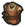

Jack in a Boat
Jack needs wood to build a boat. He's staying in Twin's Land.—speaker
Jack in a Boat is a quest from Jack.
Requirements
- 5x
 Wooden Plank (consumed)
Wooden Plank (consumed) - 5x
 Bronze Detail (consumed)
Bronze Detail (consumed) - 10x
 Reputation
Reputation
Rewards

Blacksmith's Clothes
Template:Quest navbox